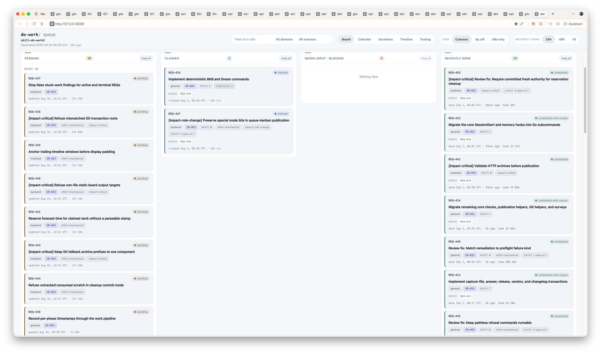

do-work · queue analysis · skill-do-work2
2026-09-01 · queue state as of 04:29 UTC (board capture) · disposition committed 593c5145
Throughput is healthy — 20 REQs completed in the preceding 24 hours — but each Route C REQ costs 1.5–2 hours of wall clock in an eight-phase pipeline, and reviews were refilling the queue about as fast as it drained. Of the 33 pending REQs, 28 are sound and stay. Four were cancelled today — REQ-464 and REQ-465 folded into REQ-420 as acceptance criteria, REQ-454 and REQ-455 dropped as consumer-less reporting polish — and REQ-460 was deferred behind REQ-420. Verified by maintainer-verify.sh exit 0 after the edits.
Estimate vs. actual · UR-081 Route C REQs · minutes
F2 · foundation mispricing
The Go platform foundation (REQ-390, 406, 407) cost roughly three full days that were priced at half a day. The chart shows the recovery: from REQ-408 on, actuals track estimates, and REQ-414/415 came in under. Estimation is now healthy; the overrun was concentrated, not systemic.
F1 · the pipeline itself
Exploration, plan, brief, builder worktree, handback, review, remediation, re-review — then release with version bump, changelog, mirror sync, and the full test suite. Every one of REQ-411 through 415 needed a remediation round (7–9 artifacts each in do-work/runs/work-2026-08-31-165510/). A 100-minute estimate becomes ~2 hours of wall clock; REQ-448 (per-phase timestamps) exists to make this split visible.
F3 · the queue refills itself
Reviews and validate-feedback runs spawned most of the pending work. UR-081 was scoped at 15 REQs and accreted 9+ review-fix children; UR-083, UR-085, and UR-086 are entirely feedback captures. Over the analyzed 24 hours, 20 REQs completed and the pending count still sat at 30 — the drain works, the tap was open.
What stays · 28 REQs
keep UR-081 spine (416–420): finishes the Go migration; REQ-420 is the shim swap and whole-suite parity proof.
keep Adjudicated bug fixes (UR-083, UR-085, UR-086): each carries an Accept verdict with evidence; several are impact-critical (438, 440, 443, 457) and most are effort-mechanical.
keep UR-084 (448, 449): phase timestamps give the F1 visibility; the plan-validation check is cheap.
keep UR-087 (468–472): non-blocking orchestration — the maintainer's own recent design decision, aimed directly at throughput.
What changed today · commit 593c5145
| REQ | Action | Reason |
|---|---|---|
REQ-465 | folded | Differential parity for all 17 core helper commands is REQ-420's acceptance goal; existed separately only because REQ-420 was dependency-gated at capture time. Criteria appended to REQ-420, cancelled via the canonical cancel transaction. |
REQ-464 | folded | Actionable structured helper findings — same fold, same destination, same mechanism. |
REQ-454 | cancelled | UR source tokens in selection records serve a multi-UR caller that does not exist. Recapture if a consumer appears. |
REQ-455 | cancelled | Run-set estimate totals — same missing consumer, same disposition. |
REQ-460 | deferred | Substantive-effort edge-case hardening (condition-complete Markdown delimiter classifier). Gated mechanically with depends_on: [REQ-420]; remove the gate to un-defer. |

User-supplied capture of the Kanban board at 2026-09-01 04:29 UTC — the queue state this analysis ran against (30 pending, 2 claimed, 20 recently done in 24h). Pre-disposition; the pending column is smaller now. Click for full resolution.
The disposition itself is queue-metadata work; UI captures were not expected for this work. Its receipts: the four cancellations ran through the canonical do-work-cli cancel transaction (each reported STATE-APPLIED, archived at do-work/archive/ root with a ## Cancelled trail), the fold criteria live in REQ-420's ## Folded From REQ-464 and REQ-465 section, and everything landed in one bookkeeping commit with the full maintainer gate green.
The disposition commit (run — 6 files, 4 renames into archive):
git show --stat 593c5145
Estimate vs. actual source rows (run — matches the chart):
tail -12 do-work/calibration-log.tsv
Baseline gate after the edits (run — exit 0, ~6 min):
bash _dev/tests/maintainer-verify.sh
Cancellation trails and fold section (unrun — inspection):
grep -A4 '## Cancelled' do-work/archive/REQ-45[45]-* do-work/archive/REQ-46[45]-* grep -n 'Folded From REQ-464' do-work/queue/REQ-420-*.md